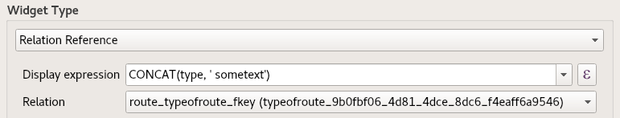

Meta Attributes
Meta Attributes allow INTERLIS models to be supplemented with additional information that is not provided for in the current specification of INTERLIS. See the syntax how they are generally specified here eCH-0117 Meta-Attribute für INTERLIS-Modelle or summarized and in Model Baker context below.
A meta element can be assigned compositional meta attributes (class "MetaAttribute"). Metaattributes are not defined more precisely by the INTERLIS language or by the metamodel. Their main purpose is to allow information that goes beyond INTERLIS to be attached as part of the model data. Metaattributes have a name (attribute "Name"), which must be unique within the metaattributes of the same meta element, and the descriptive value (attribute "Value").
The original source of this quote is in KOGIS (2008): INTERLIS 2-Metamodell
Meta Attributes in INTERLIS Files
Comment vs. Meta Attribute
An INTERLIS comment starts with !! and ends with a line end. A meta attribute starts with !! as well but followed by an @:
Syntax
After the start of !!@ the meta attribute name follows, then equal =, then the attribute value:
!!@<name>=<value>
Followed by the referenced element (MODEL, TOPIC, CLASS etc.)
Example
ExceptionalLoadsRoute.ili:
!!@ furtherInformation=https://www.astra.admin.ch/
MODEL ExceptionalLoadsCatalogues_V1 (en)
AT "http://models.geo.admin.ch/ASTRA/"
VERSION "2017-02-08" =
IMPORTS CatalogueObjects_V1,Units;
!!@ topicInformation="Route-Type"
TOPIC TypeOfRouteCatalogue
EXTENDS CatalogueObjects_V1.Catalogues =
!!@ dispExpression="CONCAT(type, ' sometext')"
CLASS TypeOfRoute
EXTENDS CatalogueObjects_V1.Catalogues.Item =
furtherInformation is referenced to ExceptionalLoadsCatalogues_V1, topicInformation to TypeOfRouteCatalogue and dispExpression to TypeOfRoute.
For more complex usage see the INTERLIS 2-Metamodell
Meta Attributes in the Database
When importing the data from the INTERLIS file to the DB, with ili2db integrated in the Model Baker, the meta attributes are stored in the table t_ili2db_meta_attrs:
| ilielement | attr_name | attr_value |
|---|---|---|
| ExceptionalLoadsCatalogues_V1 | furtherInformation | https://www.astra.admin.ch/ |
| ExceptionalLoadsCatalogues_V1.TypeOfRouteCatalogue | topicInformation | Route-Type |
| ExceptionalLoadsCatalogues_V1.TypeOfRouteCatalogue.TypeOfRoute | dispExpression | CONCAT(type, ' sometext') |
Model Baker Specific Meta Attributes
Some additional non standard meta attributes are understood by the Model Baker as properties in the QGIS project.
List of specific Attributes
- dispExpression Used as the display expression for a layer. The display expression is the name that is used to identify a feature by text. One of the places where this is used is the combobox that is shown for a Relation Reference Widget on feature forms. 
Extra Meta Attribute File
In these external files the meta attributes can be stored instead of having them directly in the INTERLIS files.
These so called extra meta attribute files (or The File Formerly Known As TOML-File) are written in INI format (not TOML) but can still have the filename extension .toml or .ini.
You can select the extra meta attribute files in the Advanced Options. This configuration is stored for the model. This means when you reselect the same model later again, the file is still referenced. This information will be displayed on the main dialog of the Project Generator.
In the background ili2pg writes the meta attributes from the external meta attribute file to the PostGIS or GeoPackage storage, where the Project Generator can use them to build the QGIS project.
Meta Attribute File Examples
ExceptionalLoadsRoute.ini:
["ExceptionalLoadsRoute.TypeOfRouteCatalogue.TypeOfRoute"]
dispExpression="type"
Or using a more complex expression:
["ExceptionalLoadsCatalogues_V1.TypeOfRouteCatalogue.TypeOfRoute"]
dispExpression="CONCAT(type, ' sometext')"
The keys that need to be used for the INI sections are the fully qualified INTERLIS names of the objects. In the example above this is ["ExceptionalLoadsCatalogues_V1.TypeOfRouteCatalogue.TypeOfRoute"]. A list of all available names can be found in the database table t_ili2db_classname after doing a schema import.
INTERLIS Example
The above example would be written as follows directly in an INTERLIS file (ExceptionalLoadsRoute.ili). If the above configuration is in the ini file, the ili meta attribute is no longer required, this is only here for reference.
!!@dispExpression="type"
CLASS TypeOfRoute=
type: MANDATORY TEXT*25;
END TypeOfRoute;